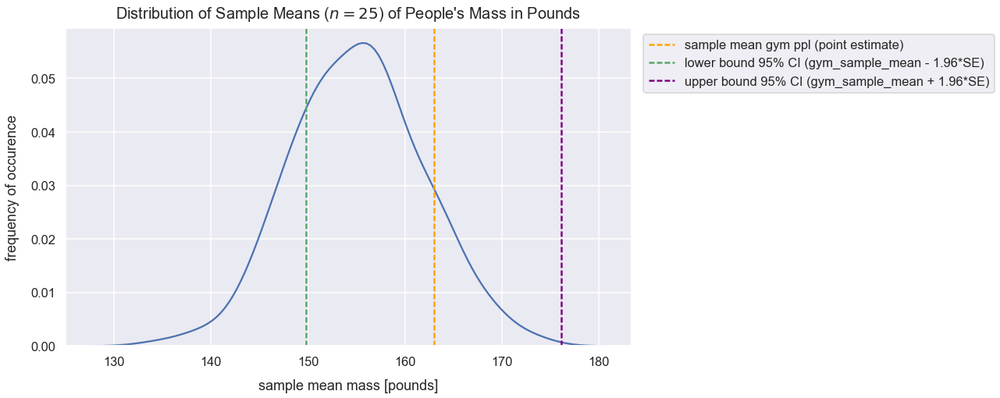

Confidence Intervals
- Jan 6 • 15 min read
- Key Terms: confidence interval, z-score, standard error, statistics, standard deviation, normal distribution, python
Confidence interval is a range of values in which there's a specified probability that the expected true population parameter lies within it.
Import Modules
import pandas as pd
import seaborn as sns
import scipy.stats as stats
import numpy as np
import random
import warnings
import matplotlib.pyplot as plt
% matplotlib inline
Visualization styling code
sns.set(rc={'figure.figsize':(13, 7.5)})
sns.set_context('talk')
Turn Off Warnings
I turn warnings off in this post because of an issue in Scipy that will be fixed in a later version.
warnings.filterwarnings('ignore')
Generate Data of People's Mass in Pounds
Below, I generate two normal distributions using the numpy random module's normal() method of mass values for men and females. I concatenate these two arrays and assign them to the column us_people_mass_pounds in a DataFrame df_ppl_mass.
np.random.seed(42)
normal_distribution_us_male_mass_pounds = np.random.normal(loc=181, scale=24, size=6000)
normal_distribution_us_female_mass_pounds = np.random.normal(loc=132, scale=22, size=6500)
all_mass_values = np.concatenate((normal_distribution_us_male_mass_pounds, normal_distribution_us_female_mass_pounds), axis=0)
df_ppl_mass = pd.DataFrame(data={'us_people_mass_pounds': all_mass_values})
Preview df_ppl_mass.
df_ppl_mass.head()
| us_people_mass_pounds | |
|---|---|
| 0 | 192.921140 |
| 1 | 177.681657 |
| 2 | 196.544525 |
| 3 | 217.552717 |
| 4 | 175.380319 |
View Distribution of U.S. People's Mass
Use the seaborn distplot() method to create a histogram of the values in the column us_people_mass_pounds.
sns.distplot(df_ppl_mass['us_people_mass_pounds'], color="darkslategrey")
plt.xlabel("mass [pounds]", labelpad=14)
plt.ylabel("probability of occurence", labelpad=14)
plt.title("Distribution of Mass of People in U.S.", y=1.015, fontsize=20);

It's tough to characterize this distribution. It's got one large peak around 140 pounds, and it's not a normal distribution since there's no symmetry around a central value.
Calculate Population Summary Statistics
Calculation Population Mean
pop_mean_mass = df_ppl_mass['us_people_mass_pounds'].mean()
pop_mean_mass
155.4232805942338
Calculate Population Standard Deviation
pop_std_dev_mass = df_ppl_mass['us_people_mass_pounds'].std()
pop_std_dev_mass
33.585190883958624
Problem Setup
I later sampled 25 people who frequent the gym at least three time per week. In statistics, we call this the treatment effect. The dependent variable is still these people's mass in pounds.
The mean sample mass of people who frequent the gym at least three times per week is 163 pounds. I'm curious how this compares to our current population of people's mass. In order to compare this new sample of people from the gym, I need to compare it to an equivalent distribution of sample means from our population.
I need to calculate where this sample mean of 163 pounds would fall on the distribution of sample means from the masses of people from the U.S. population.
Create List of Sample Means with \(n=25\)
Hypothetically, it's biased to simply select a single sample from our population and compare it to the gym goers.
Given our population mass values, I will take 300 samples each of 25 random values with replacement. For each sample, I will calculate the mean of the sample. I store all those sample means in the list sample_means.
sample_means = []
n = 25
for sample in range(0, 300):
# random sampling done with replacement
sample_values = np.random.choice(a=df_ppl_mass['us_people_mass_pounds'], size=n)
sample_mean = np.mean(sample_values)
sample_means.append(sample_mean)
View Distribution of Sample Means (Otherwise Called Sampling Distribution)
Let's view the distribution of these sample_means values.
sns.distplot(sample_means)
plt.title("Distribution of Sample Means ($n=25$) of People's Mass in Pounds", y=1.015, fontsize=20)
plt.xlabel("sample mean mass [pounds]", labelpad=14)
plt.ylabel("frequency of occurence", labelpad=14);

Wow! This distribution of sample means looks normal! The curve is fairly symmetrical around the central value and the median is roughly equivalent to the mean (see below). Based on the central limit theorem, sampling a sufficient number of times with a sufficient size will result in a normal distribution of sample means.
Calculate Sampling Distribution (\(n=25\)) Summary Statistics
Below are summary statistic calculations for the sampling distribution visualized above.
Calculate Median of Sample Means
median_of_sample_means = np.mean(sample_means)
median_of_sample_means
155.12418330193915
Calculate Mean of Sample Means
mean_of_sample_means = np.mean(sample_means)
mean_of_sample_means
155.12418330193915
pop_mean_mass
155.4232805942338
This mean_of_sample_means value is roughly equivalent to our population mean value assigned to the variable pop_mean_mass. Based on the central limit theorem, this will always be the case!
Calculate Standard Deviation of Sample Means
std_dev_of_sample_means = np.std(sample_means)
std_dev_of_sample_means
6.734407481483423
Equation for Standard Deviation of Sampling Distribution
The standard deviation of sample means is more commonly called the standard error (SE). An interesting tidbit from the central limit theorem is that I can calculate this value off the population standard deviation and sample size. The equation for standard error is:
- \(\sigma\) is population standard deviation
- \(n\) is sample size
standard_error = pop_std_dev_mass/np.sqrt(n)
standard_error
6.717038176791725
std_dev_of_sample_means
6.734407481483423
This standard error value is the same as the value calculated above for std_dev_of_sample_means.
Compare New Sample Mean to our Sampling Distribution
Let's see how the sample of people from the gym compares to this sampling distribution. Remember, the sample mean of people from the gym was 163 pounds.
This value of 163 is a point estimate because it's a single point estimate.
I'd naively estimate all samples from this gym would have a mean of 163 pounds. However, if I were to collect additional samples from the gym, I wouldn't expect the mean of the sample means to be exactly 163.
gym_sample_mean = 163
Visualize Gym Sample Mean Compared to Sampling Distribution
sns.distplot(sample_means)
plt.title("Distribution of Sample Means ($n=25$) of People's Mass in Pounds", y=1.015, fontsize=20)
plt.axvline(x=gym_sample_mean, linestyle='--', linewidth=2.5, label="sample mean of ppl at gym", c='orange')
plt.xlabel("sample mean mass [pounds]", labelpad=14)
plt.ylabel("frequency of occurence", labelpad=14)
plt.legend();

Calculate Proportion of Sample Means Less Than Gym Sample Mean
What's the probability of seeing a sample mean with a value less than 163?
Given this new sample mean of people at the gym, I can calculate the number of standard errors this value is from the mean of the sampling distribution. Let's calculate the z-score for gym_sample_mean.
I can use the following z-score equation:
- \(\bar{x}\) is the sample mean
- \(\mu\) is the population mean
- \(SE\) is the standard error calculated as \(\frac{\sigma }{\sqrt{n}}\)
z_score = (gym_sample_mean - mean_of_sample_means)/standard_error
z_score
1.172513314763173
The cdf() method from the scipy package and accompanying stats module returns the proportion of values smaller than the observation inputted for a standard normal distribution.
prop_values_less_than_gym_sample_mean = round(stats.norm.cdf(z_score), 3)
prop_values_less_than_gym_sample_mean
0.88
print("The probability of getting a sample mean less than the gym sample mean is {0}".format(prop_values_less_than_gym_sample_mean))
The probability of getting a sample mean less than the gym sample mean is 0.88
Visualize Proportion of Sample Means Less Than Gym Sample Mean
kde = stats.gaussian_kde(sample_means)
pos = np.linspace(np.min(sample_means), np.max(sample_means), 10000)
plt.plot(pos, kde(pos), color='teal')
shade = np.linspace(135, gym_sample_mean, 300)
plt.fill_between(shade, kde(shade), alpha=0.45, color='teal',)
plt.text(x=154, y=.01, horizontalalignment='center', fontsize=15,
s="Sample mean of people at gym\ngreater than {0}% of sample means\nfrom the general population".format(round(prop_values_less_than_gym_sample_mean*100, 2)),
bbox=dict(facecolor='whitesmoke', boxstyle="round, pad=0.1"))
plt.title("Distribution of Sample Means ($n=25$) of People's Mass in Pounds", y=1.015, fontsize=20)
plt.xlabel("sample mean mass [pounds]", labelpad=14)
plt.ylabel("frequency of occurence", labelpad=14);

Critical Z-Scores
For the sampling distribution above, approximately 95% of the values will fall within 2 standard errors of the mean. Let's calculate the exact z-score values that bound 95% of the data. We know that the tails on each end should be 2.5% or 0.025 of the the total area under the curve of the sampling distribution.
Below I use a z-score of 1.96 to calculate a tail of 0.025.
tail = 1 - stats.norm.cdf(1.96)
tail
0.024997895148220484
The area under the curve between the z-critcal scores is approximately 0.95
1 - (tail * 2)
0.950004209703559
Let's calculate the exact bounds for the area in which 95% of sample means lie from the population mean.
lower_95_perc_bound = mean_of_sample_means - 1.96*standard_error
lower_95_perc_bound
141.95878847542738
upper_95_perc_bound = mean_of_sample_means + 1.96*standard_error
upper_95_perc_bound
168.28957812845093
kde = stats.gaussian_kde(sample_means)
pos = np.linspace(np.min(sample_means), np.max(sample_means), 10000)
plt.plot(pos, kde(pos), color='teal')
shade = np.linspace(lower_95_perc_bound, upper_95_perc_bound, 300)
plt.fill_between(shade, kde(shade), alpha=0.45, color='teal',)
plt.text(x=154, y=.01, horizontalalignment='center', fontsize=17,
s="95% of sample means fall within\nthis shaded area of plus or minus\n1.96 z-scores from the mean",
bbox=dict(facecolor='whitesmoke', boxstyle="round, pad=0.1"))
plt.title("Distribution of Sample Means ($n=25$) of People's Mass in Pounds", y=1.015, fontsize=20)
plt.xlabel("sample mean mass [pounds]", labelpad=14)
plt.ylabel("frequency of occurence", labelpad=14);

Other critical z-scores:
| z-score | % of area under a normal distribution curve |
|---|---|
| 1.96 | 95 |
| 2.33 | 98 |
| 2.58 | 99 |
Confidence Interval for Gym Members' Mass in Pounds
If we sampled everyone who frequented the gym, we know there'd likely be a new population of values of people's mass, but we don't know where it'd be. There's a 95% chance we'd see the gym_sample_mean in this new distribution of masses for people that frequent the gym.
However, be aware that gym_sample_mean is a point estimate that's likely to have sampling error because the people in the sample may be underrepresented from other samples with those characteristics. It's possible most other samples of people who frequent the gym at least three times per week have a sample mean mass value far different than 163 pounds.
We can calculate where we'd expect 95% of the values to lie in this new distribution. 95% of new sample means of people from the gym would fall within 1.96 standard errors from the expected population mean.
\(\mu_{gym}\) is the new population mean of people's masses who frequent the gym. Our best guess is gym_sample_mean though we know it'll likely be in some interval around that.
We can express a generic formula for a 95% confidence interval for the expected population mass of gym goers as:
- \(1.96\) is the z-score for a 95% confidence interval (CI)
- \(\frac{\sigma}{\sqrt{n}}\) is equivalent to the standard error (std. dev. of the sampling distribution)
- \(\mu_{gym}\) is the population mean of the new people sampled that frequent the gym 3x per week
We'd expect 95% of sample means to fall within the interval above, so we can express that using our point estimate as:
This equation above simplifies to:
This term of \(z*SE\) above is commonly referred to as the margin of error.
Let's calculate these upper and lower bounds for our 95% confidence interval.
lower_bound_95_perc = gym_sample_mean - 1.96*standard_error
lower_bound_95_perc
149.83460517348823
upper_bound_95_perc = gym_sample_mean + 1.96*standard_error
upper_bound_95_perc
176.16539482651177
The generic formula for a confidence interal is:
- \(\bar{x}\) is the sample mean
- \(z*\frac{\sigma}{\sqrt{n}}\) is the magnitude of the numbero of standard errors away from a value
Visualize 95% Confidence Interval
sns.distplot(sample_means, hist=False)
plt.title("Distribution of Sample Means ($n=25$) of People's Mass in Pounds", y=1.015, fontsize=20)
plt.axvline(x=gym_sample_mean, linestyle='--', linewidth=2.5, label="sample mean gym ppl (point estimate)", c='orange')
plt.axvline(x=lower_bound_95_perc, linestyle='--', linewidth=2.5, label="lower bound 95% CI (gym_sample_mean - 1.96*SE)", c='g')
plt.axvline(x=upper_bound_95_perc, linestyle='--', linewidth=2.5, label="upper bound 95% CI (gym_sample_mean + 1.96*SE)", c='purple')
plt.xlabel("sample mean mass [pounds]", labelpad=14)
plt.ylabel("frequency of occurence", labelpad=14)
plt.legend(bbox_to_anchor=(1.01, 1), loc="upper left");

The population mean could range from the green to the purple vertical dotted lines above. Below is another way of visualizing that.
values = np.random.normal(loc=lower_bound_95_perc, scale=standard_error, size=5000)
sns.distplot(values, hist=False)
values2 = np.random.normal(loc=upper_bound_95_perc, scale=standard_error, size=5000)
sns.distplot(values2, hist=False)
plt.axvline(x=gym_sample_mean, linestyle='--', linewidth=2.5, label="sample mean gym ppl (point estimate)", c='purple')
plt.axvline(x=lower_bound_95_perc, linestyle='--', linewidth=2, c='crimson', label='lower 95% CI bound')
plt.axvline(x=upper_bound_95_perc, linestyle='--', linewidth=2, c='gray', label='upper 95% CI bound')
plt.title("95% Confidence Interval for Bounds of Expected Population of Masses of Frequent Gym Goers", y=1.015, fontsize=20)
bbox_props = dict(boxstyle="round", fc="w", ec="0.2", alpha=0.9)
plt.text(gym_sample_mean, 0.02, "Shaded area represents range\nof expected population\nmean ($\mu_{gym}$) - equivalent\nto interval estimate of 95% CI", ha="center",
va="center", size=16, bbox=bbox_props)
plt.axvspan(lower_bound_95_perc, upper_bound_95_perc, alpha=0.5, color='lightsteelblue')
plt.legend(bbox_to_anchor=(1.01, 1), loc="upper left");

The interval estimate for the shaded area above is:
Effect of Sample Size on Confidence Interval
Our \(n\) for our frequent gym-goers sample was 25 people. If we took a sample with an even smaller \(n\), we'd get a larger range for our confidence interval bounds. The reason for this is because our standard error would be smaller.
Bigger samples give us more precise estimates by giving us a smaller confidence interval in which the true population mean likely lies in. This is a more ideal situation to help us estimate our population parameters.